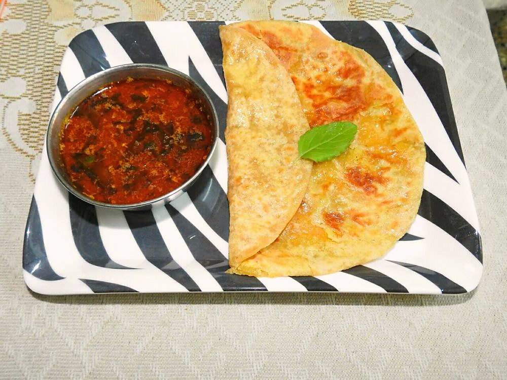

Contains: peanuts, sesame, mustard
Checked against the ingredient list for ten allergens: milk, egg, fish, crustaceans, tree nuts, peanuts, sesame, mustard, soy and gluten. Brands vary, so read the label on anything new to you.
Ingredients
Quantities for 4.
- 1 cup, rinsed Chana Dalthe kat is the cooking water; the drained dal goes to puran
- 5 cups for boiling, plus 2 cups to thin Water
- 3 tbsp, grated Dried Coconut
- 1 tbsp Sesame
- 1 tsp Poppy Seedsoptional
- 1/2 tsp Stone Flowerdagad phooloptional
- 2cm piece Cinnamon
- 3 Cloves
- 2 tsp Coriander Powder
- 2 tbsp Groundnut Oil
- 1 tsp Mustard Seeds
- 1 tsp Cumin Seeds
- 2, broken Dried Red Chilli
- 10 Curry Leaves
- 1/2 tsp Asafoetidagenerous, since there is no onion or garlic; use compounded-free hing for gluten-free
- 1/2 tsp Turmeric
- 1.5 tsp Chilli Powder
- 1 tbsp thick pulp Tamarind
- 2 tbsp, grated Jaggery
- 3 tbsp, chopped Coriander Leavesoptional
- to taste Salt
Cookware
stovetop, pressure cooker
Before you start
- This amti is made from kat. The strained cooking water of chana dal. If you are not making puran poli the same day, boil the dal, keep the water, and use the drained dal for another dish.
- Soak the chana dal 2 hours before boiling so it cooks evenly and gives up more starch to the water.
- Soak a lime-sized ball of tamarind in 4 tbsp warm water for 15 minutes and squeeze out the pulp.
Method
- Pressure cook the soaked chana dal with 5 cups water for 4 whistles, or simmer covered 40 minutes, until soft.
- Strain, keeping every drop of the cloudy water. This is the kat. Set the dal aside for puran or another use.Do not press the dal through the sieve. You want a thin broth, not a soup.
- Dry-roast the dried coconut, sesame, poppy seeds, stone flower, cinnamon and cloves over low heat 4 minutes, until the coconut is golden. Cool and grind with the coriander powder to a coarse powder.
- Heat the oil in a pan. Pop the mustard seeds, then add cumin seeds, dried red chillies, curry leaves and a generous pinch of asafoetida.The asafoetida does the work of onion and garlic here, so do not be shy with it.
- Add the turmeric and chilli powder, count to five, and pour in the kat immediately so the spices do not burn.
- Stir in the ground masala, tamarind pulp, jaggery and salt, and top up with up to 2 cups water. The amti should be thin enough to drink.
- Simmer uncovered 12-15 minutes, until a light froth forms on top and the raw tamarind edge softens.Taste at the end: it should be sharp, then sweet, then hot, in that order.
- Finish with the chopped coriander and serve alongside puran poli with a spoon of ghee, or over plain rice.
Storage
Keeps 3 days refrigerated and tastes better on day two. Reheat gently without boiling hard, and thin with hot water if it has thickened.
Nutrition Medium estimate
Medium protein: 13 g a serving, 13% of the calories
| Per serving99 g | Per 100 g | |
|---|---|---|
| Calories | 397 kcal | 401 kcal |
| Protein | 12.6 g | 13 g |
| Carbohydrate | 47.7 g | 48 g |
| of which sugars | 15.4 g | 16 g |
| Fibre | 10.0 g | 10 g |
| Fat | 19.3 g | 20 g |
| of which saturated | 8.2 g | 8 g |
| of which unsaturated | 9.6 g | 10 g |
Ingredients given to taste count as zero, so the real figures run a little higher. Nearest database match used for asafoetida, curry leaves, jaggery, stone flower. Estimated from raw ingredients using USDA FoodData Central.
Times, yields, allergens and nutrition are guidance. Use your own judgement on doneness and on storing. More in About.